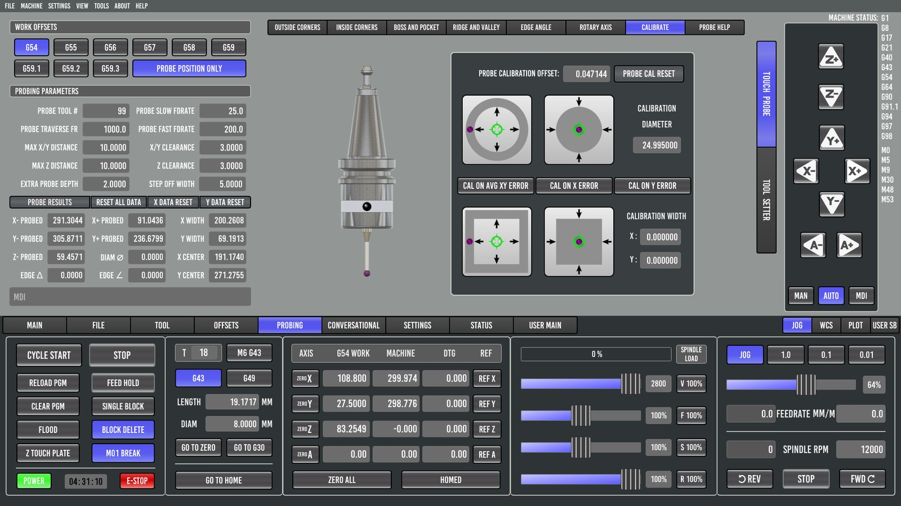
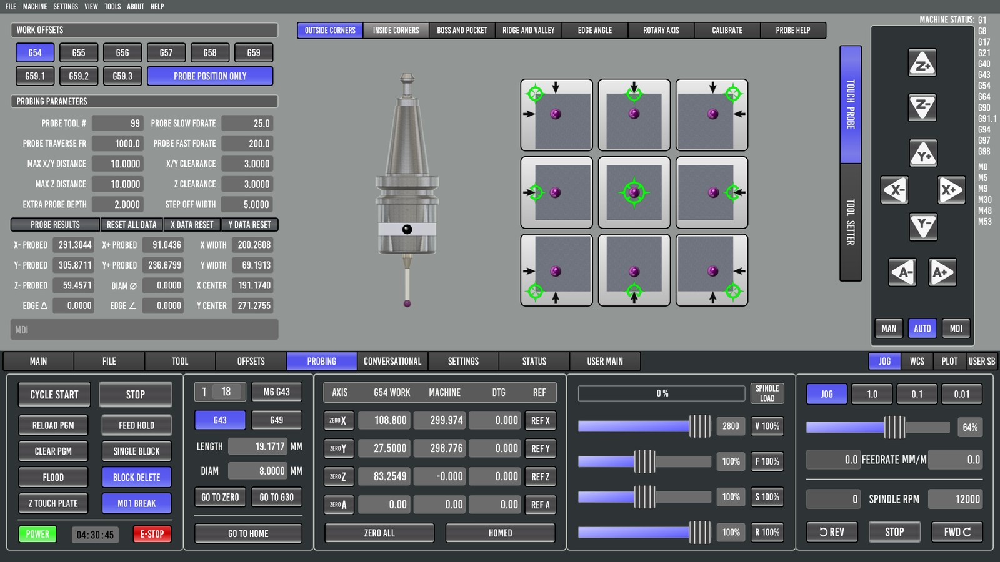
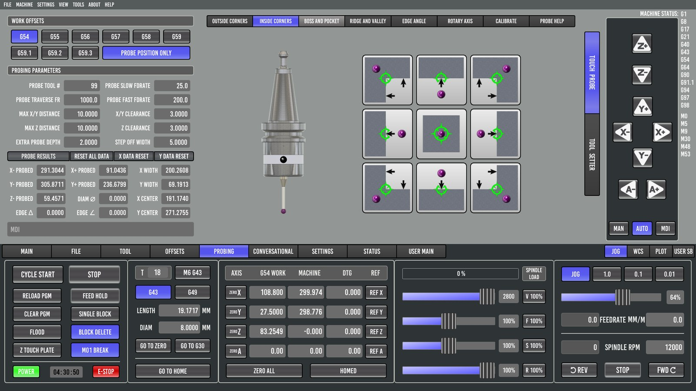
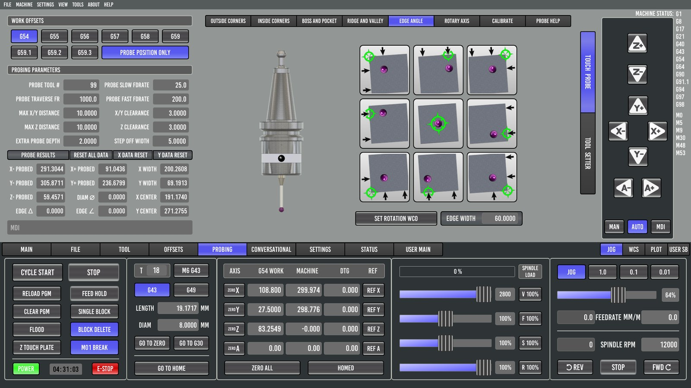
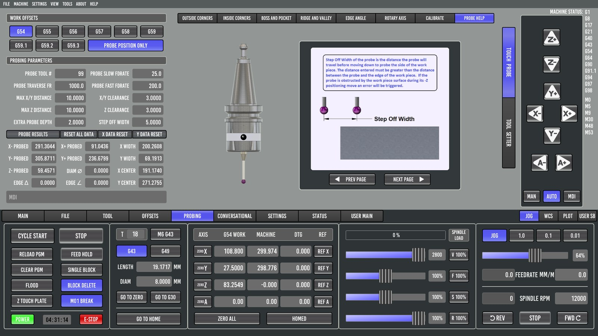

5. Probing
A 3D touch probe turns "find the edge of the part" into a button press, and is far more accurate than an edge finder or eyeballing. Probe Basic's probing suite is its biggest strength.
Setting up the probe
The probe is a tool
The probe gets a tool number, set as Probe Tool # on the TOUCH PROBE page (parameter #3014; 99 is common). Its tool-table entry needs:
- Diameter: the ball diameter, measured with a micrometer. The reference machine's "2 mm" ball measured 1.998 mm.
- Length: measured like any tool, but gently. Either use TOUCH OFF CURRENT TOOL on the tool setter at a slow feed, or touch the probe and a cutter on the same flat surface and compare.
Every probing routine first checks that the probe tool is the one in the spindle, and aborts with "Specified probe tool … not in spindle" if not. Always load it with M6 G43 so its length is applied (chapter 1 explains why).
Wiring note: normally open vs normally closed
A normally-open (NO) probe reads "not triggered" when it is unplugged or its cable is broken. Probe Basic will then drive it into the part until the stylus overtravel limit or a crash. Tap-test the probe before every probing session. A normally-closed (NC) probe fails safe, which is why industrial probes use NC.
Calibration (CALIBRATE page)

The ball triggers a little before its surface actually touches. That's the "pretravel", and it makes the ball's effective diameter slightly smaller than the real one. Calibration measures this once:
- Clamp a ring gauge (or any precisely known bore) to the table.
- Enter its diameter in CALIBRATION DIAMETER.
- Put the probe roughly in its center, below the top edge.
- Run the round-pocket calibration.
- Choose which error to store: CAL ON AVG XY ERROR, CAL ON X ERROR or CAL ON Y ERROR.
The result is the PROBE CALIBRATION OFFSET (#3032). It is subtracted from the ball radius in every edge calculation. PROBE CAL RESET clears it. There are also boss and square calibrations for when you have a gauge pin or a gauge block instead of a ring.
On the 6040. A 24.995 mm ring gauge gave different results in X and Y: the X width read 0.040 mm smaller than Y. That isn't the probe; it's axis backlash. The two axes have different amounts of lost motion, and a single calibration offset can only correct one of them. Measuring backlash with a dial indicator and entering BACKLASH in the INI fixes the root cause. Until then, calibrate on the axis you care about most.
The parameters
On the TOUCH PROBE page:
| Parameter | # | Meaning |
|---|---|---|
| Probe Tool # | 3014 | Tool number of the probe. |
| Probe fast feedrate | 3016 | Speed of the first, searching touch. |
| Probe slow feedrate | 3015 | Speed of the second, measuring touch. 0 skips the second touch. |
| Probe traverse FR | 3017 | Speed of non-probing moves between touches. These moves are themselves "guarded" (G38.3), so a collision stops the probe instead of breaking it. |
| Max X/Y distance | 3018 | How far a sideways search goes before giving up. |
| X/Y clearance | 3019 | Back-off before the slow touch. |
| Max Z distance | 3020 | How far the downward search goes. Start within this distance above the surface. |
| Z clearance | 3021 | Height above the surface for moves between touches. |
| Extra probe depth | 3022 | How far below the top edge the ball goes for side touches. It goes down by Z clearance + ball diameter + this. |
| Step off width | 3023 | How far past an edge the probe steps before dropping down beside it. |
| Edge width | 3024 | Spacing between the two touches of an EDGE ANGLE measurement. |
| Hints | 3025–3029 | Approximate part sizes for the boss, pocket, ridge and valley routines. |
| Probe position only | 3030 | 1 = measure only; 0 = write results into the active work offset. |
PROBE POSITION ONLY and PROBE RESULTS
PROBE POSITION ONLY is the single most important switch on this page:
- On: routines measure and fill in PROBE RESULTS (X−/X+/Y−/Y+/Z− probed positions, X and Y WIDTH, DIAM, X and Y CENTER, EDGE Δ, EDGE ∠). Your work offset is not touched. Use this for inspection, for example "is this bore 25.00 mm?".
- Off: routines also write the result into the active work offset (G54 unless you selected another). Use this to set up a job.
Leave it on by default and switch it off only for the probing move that sets your zero. That habit prevents the classic surprise of a measurement silently moving your work offset.
RESET ALL DATA / X DATA RESET / Y DATA RESET clear the results panel.
The routines
Each routine page shows pictures of where to start and which way the probe will move. The common rules:
- The probe must be in the spindle with G43 on.
- Start above the part, within MAX Z DISTANCE of the top, unless the routine says to start below the edge.
- For routines that step off an edge, start within STEP OFF WIDTH of that edge, measured inward. The probe moves out by the step-off width, drops, and touches back toward you. Start too far in, and it drops onto the top of the part.
OUTSIDE CORNERS

A 3×3 grid of buttons:
- Four corners: each touches the top (Z), then the two edges that meet at that corner, and sets X, Y and Z zero on that corner. Start over the part near the chosen corner, within step-off width of both edges.
- Four edges: top-left side, front, back, right side. Each finds one edge (and Z).
- The center button: touches Z only.
INSIDE CORNERS

The same idea inside a pocket or against a fixture's inside corner, plus single-direction X+/X−/Y+/Y− touches and a Z touch. Start inside, below the top edge, within MAX X/Y DISTANCE of the walls.
BOSS AND POCKET

Six buttons in two rows:
| Top row (round) | Bottom row (rectangular) |
|---|---|
| Round pocket (start below the top edge) | Rect pocket (start below the top edge) |
| Round boss (start above, centered) | Rect boss (start above, centered) |
| Round pocket, center start (start above) | Rect pocket, center start (start above) |
They find the center, and for round features the diameter. Hints matter: for bosses and center-start pockets the probe steps out to half the hint (X/Y HINT, or DIAM for round) plus the step-off width before it drops. Enter sizes within a few millimetres.
RECT BOSS is the everyday "center of the stock" routine. See the diagram in chapter 3.
RIDGE AND VALLEY
Finds the center of a rib (ridge) or a slot (valley), in X or in Y, with its own X/Y hints. Use it for the center of a T-slot, a keyway or a narrow bar.
EDGE ANGLE

Touches one edge at two points, EDGE WIDTH apart, and reports the angle (EDGE ∠) and the offset between the touches (EDGE Δ). Use it to check that a vise or part is square to the axes. SET ROTATION WCO stores the angle as the work offset's rotation (the R column on the OFFSETS tab), so programs run rotated to match a part that is clamped crooked.
On the 6040. Two edge-angle readings on a glued-down 1-2-3 block, plus two RECT BOSS measurements in both orientations, showed the X axis measuring 0.323 % long. The ballscrew's lead was slightly under 5 mm. X SCALE was corrected from 320 to 321.034 steps/mm, and the block then measured right to 0.001 mm. A probe and a gauge block make a cheap machine calibration kit.
ROTARY AXIS
Probing routines for a 4th axis: centering on a cylinder in the rotary chuck.
PROBE HELP

Pages of built-in diagrams for every routine (PREV PAGE / NEXT PAGE). Worth reading once.
A good probing habit
- Load the probe with M6 G43, and tap-test it.
- Check hints and the starting position against the routine's picture.
- First run with PROBE POSITION ONLY on, and check the numbers make sense.
- Turn it off, run again to set the offset, then turn it back on.
- Sanity-check Z with a ruler before the first cut (chapter 3, step 5).